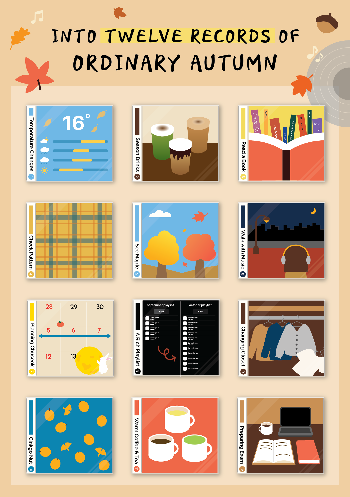

This project records ordinary autumn moments through twelve visual narratives. It explores how everyday experiences can be archived and emotionally translated using information design.
The project begins with collecting daily observations and categorizing them into twelve emotional themes.
← Back to projects